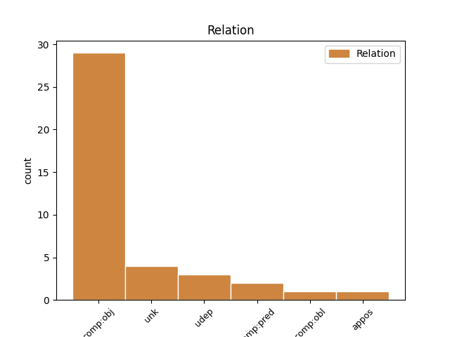
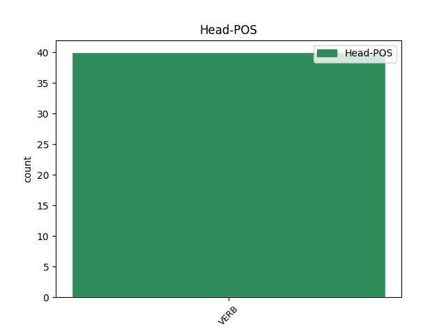
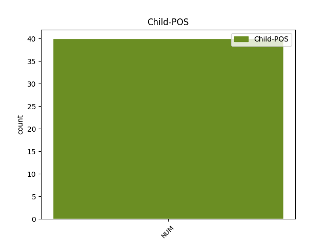

Distribution of features within this leaf



Agreement Rules sorted by frequency.
- When the dependent token is the direct object complements(comp:obj) of the head token, and the head token is VERB and the dependent token is NUM.
1 Protože _ _ _ _ 0 _ _ _
2 už _ _ _ _ 0 _ _ _
3 se _ _ _ _ 0 _ _ _
4 zbavil zbavit VERB VpMS----R-AA--- Animacy=Anim|Gender=Masc|Number=Sing|Polarity=Pos|Tense=Past|VerbForm=Part|Voice=Act 0 _ _ _
5 dvou dva NUM ClIP2---------- Animacy=Inan|Case=Gen|Gender=Masc|Number=Plur|NumForm=Word|NumType=Card|NumValue=1,2,3 4 comp:obj _ _
6 ze _ _ _ _ 0 _ _ _
7 tří _ _ _ _ 0 _ _ _
8 svých _ _ _ _ 0 _ _ _
9 špatných _ _ _ _ 0 _ _ _
10 zvyků _ _ _ _ 0 _ _ _
11 , _ _ _ _ 0 _ _ _
12 nápadně _ _ _ _ 0 _ _ _
13 se _ _ _ _ 0 _ _ _
14 změnil _ _ _ _ 0 _ _ _
15 také _ _ _ _ 0 _ _ _
16 jeho _ _ _ _ 0 _ _ _
17 způsob _ _ _ _ 0 _ _ _
18 života _ _ _ _ 0 _ _ _
19 . _ _ _ _ 0 _ _ _
1 Pán _ _ _ _ 0 _ _ _
2 se _ _ _ _ 0 _ _ _
3 tedy _ _ _ _ 0 _ _ _
4 smiloval _ _ _ _ 0 _ _ _
5 a _ _ _ _ 0 _ _ _
6 dovedl _ _ _ _ 0 _ _ _
7 ho _ _ _ _ 0 _ _ _
8 do _ _ _ _ 0 _ _ _
9 obrovského _ _ _ _ 0 _ _ _
10 sálu _ _ _ _ 0 _ _ _
11 , _ _ _ _ 0 _ _ _
12 ve _ _ _ _ 0 _ _ _
13 kterém _ _ _ _ 0 _ _ _
14 stály stát VERB VpIP----R-AA--- Animacy=Inan|Gender=Masc|Number=Plur|Polarity=Pos|Tense=Past|VerbForm=Part|Voice=Act 0 _ _ _
15 kříže _ _ _ _ 0 _ _ _
16 bez _ _ _ _ 0 _ _ _
17 čísel _ _ _ _ 0 _ _ _
18 ve _ _ _ _ 0 _ _ _
19 všech _ _ _ _ 0 _ _ _
20 možných _ _ _ _ 0 _ _ _
21 velikostech _ _ _ _ 0 _ _ _
22 a _ _ _ _ 0 _ _ _
23 provedeních _ _ _ _ 0 _ _ _
24 , _ _ _ _ 0 _ _ _
25 pro _ _ _ _ 0 _ _ _
26 každého _ _ _ _ 0 _ _ _
27 člověka _ _ _ _ 0 _ _ _
28 jeden jeden NUM ClIS1---------- Animacy=Inan|Case=Nom|Gender=Masc|Number=Sing|NumForm=Word|NumType=Card|NumValue=1,2,3 14 unk _ SpaceAfter=No
29 . _ _ _ _ 0 _ _ _
1 " _ _ _ _ 0 _ _ _
2 Aha _ _ _ _ 0 _ _ _
3 , _ _ _ _ 0 _ _ _
4 " _ _ _ _ 0 _ _ _
5 přikývli přikývnout VERB VpMP----R-AA--1 Animacy=Anim|Gender=Masc|Number=Plur|Polarity=Pos|Tense=Past|VerbForm=Part|Voice=Act 0 _ _ _
6 jeden jeden NUM ClMS1---------- Animacy=Anim|Case=Nom|Gender=Masc|Number=Sing|NumForm=Word|NumType=Card|NumValue=1,2,3 5 comp:pred _ _
7 po _ _ _ _ 0 _ _ _
8 druhém _ _ _ _ 0 _ _ _
9 jako _ _ _ _ 0 _ _ _
10 sudičky _ _ _ _ 0 _ _ _
11 nad _ _ _ _ 0 _ _ _
12 kolébkou _ _ _ _ 0 _ _ _
13 prince _ _ _ _ 0 _ _ _
14 , _ _ _ _ 0 _ _ _
15 " _ _ _ _ 0 _ _ _
16 my _ _ _ _ 0 _ _ _
17 sem _ _ _ _ 0 _ _ _
18 zase _ _ _ _ 0 _ _ _
19 chodíme _ _ _ _ 0 _ _ _
20 každý _ _ _ _ 0 _ _ _
21 den _ _ _ _ 0 _ _ _
22 , _ _ _ _ 0 _ _ _
23 přijďte _ _ _ _ 0 _ _ _
24 taky _ _ _ _ 0 _ _ _
25 . _ _ _ _ 0 _ _ _
1 Od _ _ _ _ 0 _ _ _
2 dětí _ _ _ _ 0 _ _ _
3 , _ _ _ _ 0 _ _ _
4 kterým _ _ _ _ 0 _ _ _
5 tehdy _ _ _ _ 0 _ _ _
6 bylo být VERB VpNS----R-AA--- Gender=Neut|Number=Sing|Polarity=Pos|Tense=Past|VerbForm=Part|Voice=Act 0 _ _ _
7 - _ _ _ _ 0 _ _ _
8 jednomu jeden NUM ClNS3---------- Case=Dat|Gender=Neut|Number=Sing|NumForm=Word|NumType=Card|NumValue=1,2,3 6 appos _ _
9 čtrnáct _ _ _ _ 0 _ _ _
10 , _ _ _ _ 0 _ _ _
11 druhému _ _ _ _ 0 _ _ _
12 šestnáct _ _ _ _ 0 _ _ _
13 a _ _ _ _ 0 _ _ _
14 třetímu _ _ _ _ 0 _ _ _
15 sedmnáct _ _ _ _ 0 _ _ _
16 , _ _ _ _ 0 _ _ _
17 od _ _ _ _ 0 _ _ _
18 každého _ _ _ _ 0 _ _ _
19 bylo _ _ _ _ 0 _ _ _
20 v _ _ _ _ 0 _ _ _
21 tom _ _ _ _ 0 _ _ _
22 svazku _ _ _ _ 0 _ _ _
23 několik _ _ _ _ 0 _ _ _
24 dopisů _ _ _ _ 0 _ _ _
25 a _ _ _ _ 0 _ _ _
26 byly _ _ _ _ 0 _ _ _
27 to _ _ _ _ 0 _ _ _
28 poslední _ _ _ _ 0 _ _ _
29 dopisy _ _ _ _ 0 _ _ _
30 , _ _ _ _ 0 _ _ _
31 které _ _ _ _ 0 _ _ _
32 kdy _ _ _ _ 0 _ _ _
33 matce _ _ _ _ 0 _ _ _
34 poslaly _ _ _ _ 0 _ _ _
35 . _ _ _ _ 0 _ _ _
1 Jednomu jeden NUM ClMS3---------- Animacy=Anim|Case=Dat|Gender=Masc|Number=Sing|NumForm=Word|NumType=Card|NumValue=1,2,3 3 comp:obl _ _
2 například _ _ _ _ 0 _ _ _
3 přisoudil přisoudit VERB VpMS----R-AA--- Animacy=Anim|Gender=Masc|Number=Sing|Polarity=Pos|Tense=Past|VerbForm=Part|Voice=Act 0 _ _ _
4 roli _ _ _ _ 0 _ _ _
5 kuřáka _ _ _ _ 0 _ _ _
6 , _ _ _ _ 0 _ _ _
7 který _ _ _ _ 0 _ _ _
8 usne _ _ _ _ 0 _ _ _
9 s _ _ _ _ 0 _ _ _
10 cigaretou _ _ _ _ 0 _ _ _
11 v _ _ _ _ 0 _ _ _
12 posteli _ _ _ _ 0 _ _ _
13 , _ _ _ _ 0 _ _ _
14 jiní _ _ _ _ 0 _ _ _
15 představovali _ _ _ _ 0 _ _ _
16 hasiče _ _ _ _ 0 _ _ _
17 , _ _ _ _ 0 _ _ _
18 kteří _ _ _ _ 0 _ _ _
19 hrají _ _ _ _ 0 _ _ _
20 na _ _ _ _ 0 _ _ _
21 stanici _ _ _ _ 0 _ _ _
22 karty _ _ _ _ 0 _ _ _
23 ve _ _ _ _ 0 _ _ _
24 chvíli _ _ _ _ 0 _ _ _
25 , _ _ _ _ 0 _ _ _
26 kdy _ _ _ _ 0 _ _ _
27 se _ _ _ _ 0 _ _ _
28 ozve _ _ _ _ 0 _ _ _
29 hlášení _ _ _ _ 0 _ _ _
30 , _ _ _ _ 0 _ _ _
31 byla _ _ _ _ 0 _ _ _
32 tu _ _ _ _ 0 _ _ _
33 matka _ _ _ _ 0 _ _ _
34 , _ _ _ _ 0 _ _ _
35 která _ _ _ _ 0 _ _ _
36 ze _ _ _ _ 0 _ _ _
37 střechy _ _ _ _ 0 _ _ _
38 do _ _ _ _ 0 _ _ _
39 záchranné _ _ _ _ 0 _ _ _
40 plachty _ _ _ _ 0 _ _ _
41 hází _ _ _ _ 0 _ _ _
42 své _ _ _ _ 0 _ _ _
43 robě _ _ _ _ 0 _ _ _
44 , _ _ _ _ 0 _ _ _
45 neteční _ _ _ _ 0 _ _ _
46 diváci _ _ _ _ 0 _ _ _
47 a _ _ _ _ 0 _ _ _
48 podobně _ _ _ _ 0 _ _ _
49 . _ _ _ _ 0 _ _ _
Disagree Examples:
1 Přejížděl přejíždět VERB VpMS----R-AA--- Animacy=Anim|Gender=Masc|Number=Sing|Polarity=Pos|Tense=Past|VerbForm=Part|Voice=Act 0 _ _ _
2 jsem _ _ _ _ 0 _ _ _
3 před _ _ _ _ 0 _ _ _
4 pár _ _ _ _ 0 _ _ _
5 desítkami _ _ _ _ 0 _ _ _
6 let _ _ _ _ 0 _ _ _
7 jednu jeden NUM ClFS4---------- Case=Acc|Gender=Fem|Number=Sing|NumForm=Word|NumType=Card|NumValue=1,2,3 1 comp:obj _ _
8 z _ _ _ _ 0 _ _ _
9 tehdy _ _ _ _ 0 _ _ _
10 opuštěných _ _ _ _ 0 _ _ _
11 končin _ _ _ _ 0 _ _ _
12 téhle _ _ _ _ 0 _ _ _
13 krásné _ _ _ _ 0 _ _ _
14 země _ _ _ _ 0 _ _ _
15 . _ _ _ _ 0 _ _ _
1 Kouřil _ _ _ _ 0 _ _ _
2 jsem _ _ _ _ 0 _ _ _
3 léta _ _ _ _ 0 _ _ _
4 a _ _ _ _ 0 _ _ _
5 kouřil _ _ _ _ 0 _ _ _
6 jsem _ _ _ _ 0 _ _ _
7 od _ _ _ _ 0 _ _ _
8 rána _ _ _ _ 0 _ _ _
9 do _ _ _ _ 0 _ _ _
10 noci _ _ _ _ 0 _ _ _
11 a _ _ _ _ 0 _ _ _
12 věděl _ _ _ _ 0 _ _ _
13 jsem _ _ _ _ 0 _ _ _
14 , _ _ _ _ 0 _ _ _
15 že _ _ _ _ 0 _ _ _
16 nemám _ _ _ _ 0 _ _ _
17 , _ _ _ _ 0 _ _ _
18 a _ _ _ _ 0 _ _ _
19 stejně _ _ _ _ 0 _ _ _
20 jsem _ _ _ _ 0 _ _ _
21 pálil pálit VERB VpMS----R-AA--- Animacy=Anim|Gender=Masc|Number=Sing|Polarity=Pos|Tense=Past|VerbForm=Part|Voice=Act 0 _ _ _
22 jednu jeden NUM ClFS4---------- Case=Acc|Gender=Fem|Number=Sing|NumForm=Word|NumType=Card|NumValue=1,2,3 21 comp:obj _ _
23 od _ _ _ _ 0 _ _ _
24 druhé _ _ _ _ 0 _ _ _
25 . _ _ _ _ 0 _ _ _
1 A _ _ _ _ 0 _ _ _
2 umím _ _ _ _ 0 _ _ _
3 si _ _ _ _ 0 _ _ _
4 představit _ _ _ _ 0 _ _ _
5 , _ _ _ _ 0 _ _ _
6 jak _ _ _ _ 0 _ _ _
7 by _ _ _ _ 0 _ _ _
8 napjatě _ _ _ _ 0 _ _ _
9 poslouchal _ _ _ _ 0 _ _ _
10 , _ _ _ _ 0 _ _ _
11 když _ _ _ _ 0 _ _ _
12 bych _ _ _ _ 0 _ _ _
13 mu _ _ _ _ 0 _ _ _
14 vyprávěla _ _ _ _ 0 _ _ _
15 , _ _ _ _ 0 _ _ _
16 jak _ _ _ _ 0 _ _ _
17 jsem _ _ _ _ 0 _ _ _
18 se _ _ _ _ 0 _ _ _
19 chopila _ _ _ _ 0 _ _ _
20 oštěpu _ _ _ _ 0 _ _ _
21 a _ _ _ _ 0 _ _ _
22 zahalena _ _ _ _ 0 _ _ _
23 do _ _ _ _ 0 _ _ _
24 vlčí _ _ _ _ 0 _ _ _
25 kůže _ _ _ _ 0 _ _ _
26 jsem _ _ _ _ 0 _ _ _
27 se _ _ _ _ 0 _ _ _
28 plížila _ _ _ _ 0 _ _ _
29 plání _ _ _ _ 0 _ _ _
30 až _ _ _ _ 0 _ _ _
31 k _ _ _ _ 0 _ _ _
32 zimovišti _ _ _ _ 0 _ _ _
33 mamutů _ _ _ _ 0 _ _ _
34 a _ _ _ _ 0 _ _ _
35 tam _ _ _ _ 0 _ _ _
36 lovila lovit VERB VpFS----R-AA--- Gender=Fem|Number=Sing|Polarity=Pos|Tense=Past|VerbForm=Part|Voice=Act 0 _ _ _
37 jednoho jeden NUM ClMS4---------- Animacy=Anim|Case=Acc|Gender=Masc|Number=Sing|NumForm=Word|NumType=Card|NumValue=1,2,3 36 udep _ _
38 po _ _ _ _ 0 _ _ _
39 druhém _ _ _ _ 0 _ _ _
40 . _ _ _ _ 0 _ _ _
1 Co _ _ _ _ 0 _ _ _
2 činit _ _ _ _ 0 _ _ _
3 , _ _ _ _ 0 _ _ _
4 aby _ _ _ _ 0 _ _ _
5 bychom _ _ _ _ 0 _ _ _
6 neztratili ztratit VERB VpMP----R-NA--- Animacy=Anim|Gender=Masc|Number=Plur|Polarity=Neg|Tense=Past|VerbForm=Part|Voice=Act 0 _ _ _
7 ani _ _ _ _ 0 _ _ _
8 jednu jeden NUM ClFS4---------- Case=Acc|Gender=Fem|Number=Sing|NumForm=Word|NumType=Card|NumValue=1,2,3 6 comp:obj _ _
9 z _ _ _ _ 0 _ _ _
10 těch _ _ _ _ 0 _ _ _
11 základních _ _ _ _ 0 _ _ _
12 i _ _ _ _ 0 _ _ _
13 doprovodných _ _ _ _ 0 _ _ _
14 hodnot _ _ _ _ 0 _ _ _
15 zrovna _ _ _ _ 0 _ _ _
16 tak _ _ _ _ 0 _ _ _
17 snadno _ _ _ _ 0 _ _ _
18 , _ _ _ _ 0 _ _ _
19 jako _ _ _ _ 0 _ _ _
20 odkládáme _ _ _ _ 0 _ _ _
21 z _ _ _ _ 0 _ _ _
22 hromádky _ _ _ _ 0 _ _ _
23 papírů _ _ _ _ 0 _ _ _
24 jeden _ _ _ _ 0 _ _ _
25 po _ _ _ _ 0 _ _ _
26 druhém _ _ _ _ 0 _ _ _
27 . _ _ _ _ 0 _ _ _
1 Hrát _ _ _ _ 0 _ _ _
2 se _ _ _ _ 0 _ _ _
3 muselo _ _ _ _ 0 _ _ _
4 , _ _ _ _ 0 _ _ _
5 takže _ _ _ _ 0 _ _ _
6 jsem _ _ _ _ 0 _ _ _
7 se _ _ _ _ 0 _ _ _
8 rozhodl _ _ _ _ 0 _ _ _
9 , _ _ _ _ 0 _ _ _
10 že _ _ _ _ 0 _ _ _
11 já _ _ _ _ 0 _ _ _
12 přiberu _ _ _ _ 0 _ _ _
13 další _ _ _ _ 0 _ _ _
14 roli _ _ _ _ 0 _ _ _
15 , _ _ _ _ 0 _ _ _
16 náš _ _ _ _ 0 _ _ _
17 kulisák _ _ _ _ 0 _ _ _
18 vzal vzít VERB VpMS----R-AA--- Animacy=Anim|Gender=Masc|Number=Sing|Polarity=Pos|Tense=Past|VerbForm=Part|Voice=Act 0 _ _ _
19 taky _ _ _ _ 0 _ _ _
20 jednu jeden NUM ClFS4---------- Case=Acc|Gender=Fem|Number=Sing|NumForm=Word|NumType=Card|NumValue=1,2,3 18 comp:obj _ _
21 a _ _ _ _ 0 _ _ _
22 něčí _ _ _ _ 0 _ _ _
23 přítelkyně _ _ _ _ 0 _ _ _
24 se _ _ _ _ 0 _ _ _
25 odvážně _ _ _ _ 0 _ _ _
26 nabídla _ _ _ _ 0 _ _ _
27 , _ _ _ _ 0 _ _ _
28 že _ _ _ _ 0 _ _ _
29 zaplní _ _ _ _ 0 _ _ _
30 další _ _ _ _ 0 _ _ _
31 dvě _ _ _ _ 0 _ _ _
32 díry _ _ _ _ 0 _ _ _
33 v _ _ _ _ 0 _ _ _
34 obsazení _ _ _ _ 0 _ _ _
35 . _ _ _ _ 0 _ _ _